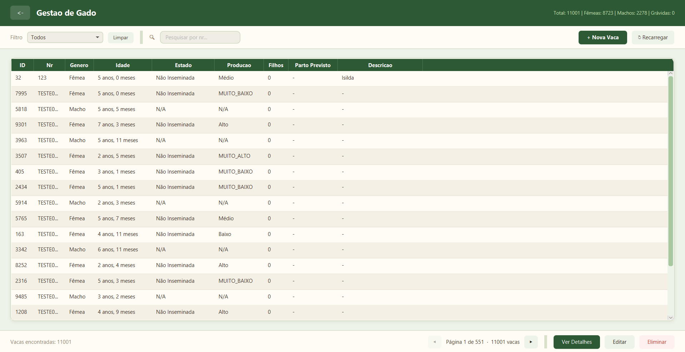

A ADIFAL traz inteligência agrícola à sua exploração. Controle todo o ciclo reprodutivo do seu gado num único sistema — inseminações, partos, calendários e muito mais.
Seis pilares que definem a nossa abordagem à modernização do sector agropecuário.
Simplificar a gestão pecuária com tecnologia acessível, ajudando agricultores a tomar decisões informadas e a otimizar a produtividade das suas explorações.
Ser a referência em software de inteligência agrícola em Portugal, levando inovação digital ao campo e tornando a pecuária mais eficiente e sustentável.
Proximidade com o agricultor, simplicidade na utilização, inovação contínua e compromisso com o desenvolvimento do sector agrícola nacional.
Cada letra representa um compromisso com a evolução do sector agrícola.
Tudo o que precisa para gerir a sua exploração pecuária num único lugar.
Registe, edite e consulte toda a informação dos seus animais. Ficha completa com histórico, estado reprodutivo, lactações e muito mais.
Controle total do ciclo reprodutivo — registe inseminações, acompanhe gestações e monitorize o estado de cada animal.
Visualize partos previstos, secagens e transições num calendário intuitivo. Nunca perca uma data importante.
Monitorize o período de espera voluntário de cada animal, garantindo que as inseminações são feitas no momento ideal.
Gerencie utilizadores, monitorize o servidor e controle acessos. Tudo sob o seu controlo total num painel dedicado.
Os seus dados são armazenados de forma segura nos nossos servidores, com autenticação robusta e backups automáticos — sem preocupações para o agricultor.
Desenvolvemos hardware próprio que se instala diretamente na linha de ordenha — entre a tetina e o tanque — para analisar o leite em tempo real. Compatível com qualquer tipo de ordenha (sala, robot, espinha de peixe), com opção de instalação por sala ou por vaca individual. Clique em cada sistema para saber mais.
O nosso sistema instala-se após a saída da tetina, onde uma unidade compacta — uma caixa com sensores internos — recebe o leite que a atravessa continuamente. Durante toda a ordenha, sensores de condutividade elétrica e pH analisam o leite em tempo real, detetando alterações que indicam presença de mamite.
Quando os valores ultrapassam os limiares definidos, o sistema atua em aproximadamente 3 segundos: uma válvula solenoide desvia automaticamente o leite contaminado para um tanque de despejo intermédio. Este tanque intermédio existe precisamente para ganhar tempo de reação, garantindo que nenhum leite contaminado chega ao tanque principal e estraga todo o lote.
O sistema não se limita a desviar — alerta imediatamente o agricultor através do software, identificando qual a vaca (ou sala) com o problema. O agricultor pode então confirmar se se trata de mamite e decidir como proceder: continuar a desviar, parar a ordenha daquele animal, ou retomar normalmente. O controlo final é sempre do agricultor.
Na instalação por vaca individual, o sistema regista histórico completo de deteções por animal. Isto permite identificar vacas com problemas recorrentes, recomendar tratamentos e acompanhar a evolução — tudo integrado no software ADIFAL.
A medição é feita inline, ou seja, enquanto o leite passa pela unidade de sensores durante a ordenha — sem necessidade de recolher amostras à parte. O sistema mede a percentagem de gordura numa escala de 0 a 100%, com uma taxa de aproximação de até 1% face a análises laboratoriais de referência.
Na configuração por vaca, cada animal tem o seu registo individual de gordura, integrado diretamente no software ADIFAL. Isto permite ao agricultor acompanhar a evolução da qualidade do leite de cada vaca ao longo do tempo e tomar decisões informadas sobre alimentação e genética.
Para além da gordura, o sistema atual também mede caudal de leite e deteta mamite. Estamos já a planear futuras versões que incluirão medição de proteína, lactose e outros parâmetros — um laboratório portátil diretamente na ordenha.
O sistema funciona em qualquer tipo de ordenha — sala convencional, espinha de peixe, rotativa ou robot. A instalação é feita pela equipa técnica da ADIFAL, que adapta o sistema ao equipamento existente na exploração.
Se o cliente já tiver algum equipamento de análise ou sensores instalados, podemos integrá-los no nosso sistema, reduzindo o custo total da instalação.
A máquina funciona sem internet — a análise, deteção e desvio são feitos localmente em tempo real. No entanto, é necessária conexão à rede para guardar os dados da colheita no software ADIFAL, consultar históricos e receber alertas remotamente.
Por sala de ordenha — uma unidade que analisa o leite de toda a sala. Ideal para explorações que querem
monitorização geral a menor custo.
Por vaca individual — uma unidade por ponto de ordenha. Permite rastreabilidade total,
identificando exatamente qual animal tem problemas e gerando histórico individual.
O preço situa-se entre 300€ e 500€ por unidade, dependendo da configuração escolhida (por sala ou por vaca). Se a exploração já possuir equipamentos compatíveis, o custo pode ser reduzido com integração no sistema existente. Contacte-nos para um orçamento personalizado.
Toda a engenharia e arquitetura do sistema estão definidas — esquemas elétricos, seleção de sensores, lógica de controlo e integração com o software. Estamos atualmente em fase de desenvolvimento ativo, a construir os primeiros protótipos físicos e a validar os sensores em condições reais.
O sistema é construído com componentes industriais comprovados: microcontrolador ESP-32 com WiFi integrado, sensor de caudal YF-S201, sensor de pH SEN0161-V2, sensor de condutividade EZO-EC, sensor de temperatura DS18B20, válvula solenoide de 12V para desvio de leite, e alimentação via transformador 230V para 12V com conversor LM2596 para 5V.
Se tem interesse em testar o sistema na sua exploração ou quer acompanhar o desenvolvimento, entre em contacto connosco. Estamos à procura de explorações parceiras para a fase de testes piloto.
Interface limpa e intuitiva, desenhada para ser fácil de usar no dia-a-dia da exploração.

Estamos a construir o futuro da gestão pecuária. Veja o que vem a seguir.
Faça o download da versão beta gratuita e comece a gerir o seu gado de forma inteligente.
* A versão beta é gratuita e destina-se a testes. Inclui a aplicação cliente — o servidor deve ser configurado separadamente.
Descarregue o JDK em adoptium.net
Execute o script SQL para criar a base de dados MySQL
Execute o GadoApp-Server.jar na sua máquina ou rede local
Execute o GadoApp.jar e faça login
Tem dúvidas, sugestões ou encontrou um bug? Entre em contacto connosco.